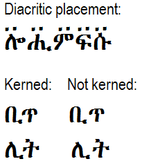

Abyssinica SIL - Font Features
Abyssinica SIL is a TrueType font with smart font capabilities added using OpenType and Graphite font technologies. The Ethiopic script does not require much rendering except for some combining marks for gemination and vowel length. However, there are some glyph variations for the Ethiopic script. Some applications let the user control certain features such as Character Variants to turn on the rendering of variant characters. However, at this point, most applications do not make use of those features so another solution is needed to show the variant characters. TypeTuner creates tuned fonts that use the variant glyph in place of the standard glyph. TypeTuner also provides the ability to turn on support for the Sebat Bet Gurage and Gumuz languages variants.
See Using Font Features. Although that page is not targeted at Ethiopic support, it does provide a comprehensive list of applications that make full use of the OpenType and Graphite font technologies.
Advanced typographic capabilities
This font supports various advanced typographic capabilities using the Graphite and OpenType font technologies.
- Auto placement of diacritics (one level only) on Ethiopic syllables only (not on Latin characters)
- Kerning of almost 200 pairs of Ethiopic syllables
- OpenType Character Variants or Graphite features (alternately-designed glyphs are also provided for a number of characters for use in particular contexts)
- OpenType and Graphite support for the Sebat Bet Gurage [sgw] and Gumuz [guk] languages
These capabilities are available in any application that supports the Graphite technology. They are also available via the OpenType technology, though this requires applications that provide a sufficient level of support for OpenType Character Variant features.
A sample of diacritic placement and kerning is shown below:
This page uses web fonts (WOFF2) to demonstrate font features and should display correctly in all modern browsers. For a more concise example of how to use Abyssinica SIL as a web font see Abyssinica SIL Webfont Example. For detailed information see Using SIL Fonts on Web Pages.
If this document is not displaying correctly a PDF version is also provided in the documentation/pdf folder of the release package.
Customizing with TypeTuner
For applications that do not make use of Graphite or the OpenType Stylistic Sets feature, you can now download fonts customized with the variant glyphs you choose. Read the Font Features page, visit TypeTuner Web, then to choose the variants and download your font.
Complete feature list
There are some Ethiopic character shape differences in different Ethiopian languages. These can be accessed by using Graphite features, OpenType Character Variants, or language support for Sebat Bet Gurage and Gumuz languages. The documents below can be downloaded in order to see all the user-selectable font features that are available in the font. The feature names, feature ids, settings and examples are provided.
Test rendering engine choice
Here is a simple test to see if Graphite is working in your browser. If it is, the following will say "RenderingGraphite". If your browser does not support Graphite it should say "RenderingOpentype". Firefox is currently the only browser that supports Graphite. See the instructions on how to enable Graphite in Firefox.
| Check | RenderingUnknown |
Language
Affects: U+124A, U+124D, U+1298..U+129F, U+12B2, U+12B5, U+12C2, U+12C5, U+1312, U+1313, U+1315, U+1381, U+1385, U+138D
| Language | Sample | Feature setting |
|---|---|---|
| default | ቊ ቍ ኘ ኙ ኚ ኛ ኜ ኝ ኞ ኟ ኲ ኵ ዂ ዅ ጒ ጓ ጕ ᎁ ᎅ ᎍ | |
| Sebat Bet Gurage (sgw) | ቊ ቍ ኘ ኙ ኚ ኛ ኜ ኝ ኞ ኟ ኲ ኵ ዂ ዅ ጒ ጓ ጕ ᎁ ᎅ ᎍ | lang=sgw |
| Gumuz (guk) | ቊ ቍ ኘ ኙ ኚ ኛ ኜ ኝ ኞ ኟ ኲ ኵ ዂ ዅ ጒ ጓ ጕ ᎁ ᎅ ᎍ | lang=guk |
Character variants
Punctuation
| Feature | Sample | Feature setting |
|---|---|---|
| Ethiopic-style | ! $ % * + / 0 1 2 3 4 5 6 7 8 9 = ? ¡ © « ² ³ ¹ » × ‘ ’ “ ” ‹ › ⁰ ⁴ ⁵ ⁶ ⁷ ⁸ ⁹ € | cv01=0 |
| Latin-style | ! $ % * + / 0 1 2 3 4 5 6 7 8 9 = ? ¡ © « ² ³ ¹ » × ‘ ’ “ ” ‹ › ⁰ ⁴ ⁵ ⁶ ⁷ ⁸ ⁹ € | cv01=1 |
Ethiopic digits
| Feature | Sample | Feature setting |
|---|---|---|
| Standard | ፩ ፪፫ ፫፬፭ ፺፻፼፻፼፩፼፩፪ | cv02=0 |
| Connected | ፩ ፪፫ ፫፬፭ ፺፻፼፻፼፩፼፩፪ | cv02=1 |
mwa alternates
Affects: U+121F
| Feature | Sample | Feature setting |
|---|---|---|
| Standard | ሟ | cv04=0 |
| Alternate-1 | ሟ¹ | cv04=1 |
| Alternate-2 | ሟ² | cv04=2 |
rwa alternate
Affects: U+122F
| Feature | Sample | Feature setting |
|---|---|---|
| Standard | ሯ | cv05=0 |
| Alternate | ሯ² | cv05=1 |
xoa alternate
Affects: U+1287
| Feature | Sample | Feature setting |
|---|---|---|
| Standard | ኇ | cv17=0 |
| Alternate | ኇ | cv17=1 |
xwa alternates
Affects: U+1288..U+128D
| Feature | Sample | Feature setting |
|---|---|---|
| Standard | ኈ ኊ ኋ ኌ ኍ | cv18=0 |
| Handwriting | ኈ ኊ ኋ ኌ ኍ | cv18=1 |
nwa alternate
Affects: U+1297
| Feature | Sample | Feature setting |
|---|---|---|
| Standard | ኗ | cv19=0 |
| Alternate | ኗ¹ | cv19=1 |
nya alternates
Affects: U+1298..U+129E
| Feature | Sample | Feature setting |
|---|---|---|
| Standard | ኘ ኙ ኚ ኛ ኜ ኝ ኞ | cv20=0 |
| Disconnected | ኘ ኙ ኚ ኛ ኜ ኝ ኞ³ | cv20=1 |
nywa alternates
Affects: U+129F
| Feature | Sample | Feature setting |
|---|---|---|
| Standard | ኟ | cv21=0 |
| Disconnected | ኟ³ | cv21=1 |
| Cohen | ኟ² | cv21=2 |
kxwaa alternate
Affects: U+12C3
| Feature | Sample | Feature setting |
|---|---|---|
| Standard | ዃ | cv26=0 |
| Alternate | ዃ² | cv26=1 |
zha alternates
Affects: U+12E0..U+12E6
| Feature | Sample | Feature setting |
|---|---|---|
| Standard | ዠ ዡ ዢ ዣ ዤ ዥ ዦ | cv31=0 |
| Cohen | ዠ ዡ ዢ ዣ ዤ ዥ ዦ⁴ | cv31=1 |
| Chaine | ዠ ዡ ዢ ዣ ዤ ዥ ዦ⁵ | cv31=2 |
dda alternates
Affects: U+12F8..U+12FE
| Feature | Sample | Feature setting |
|---|---|---|
| Standard | ዸ ዹ ዺ ዻ ዼ ዽ ዾ | cv32=0 |
| Alternate | ዸ ዹ ዺ ዻ ዼ ዽ ዾ⁶ | cv32=1 |
gwaa alternates
Affects: U+1313
| Feature | Sample | Feature setting |
|---|---|---|
| Standard | ጓ | cv40=0 |
| Sebat Bet | ጓ⁷ | cv40=1 |
| Alone Stokes | ጓ⁸ | cv40=2 |
gga alternates
Affects: U+1318..U+131E
| Feature | Sample | Feature setting |
|---|---|---|
| Standard | ጘ ጙ ጚ ጛ ጜ ጝ ጞ | cv41=0 |
| Disconnected | ጘ ጙ ጚ ጛ ጜ ጝ ጞ⁹ | cv41=1 |
ggwaa alternate
Affects: U+131F
| Feature | Sample | Feature setting |
|---|---|---|
| Standard | ጟ | cv42=0 |
| Disconnected | ጟ⁹ | cv42=1 |
phe alternate
Affects: U+1335
| Feature | Sample | Feature setting |
|---|---|---|
| Standard | ጵ | cv45=0 |
| Alternate | ጵ¹⁰ | cv45=1 |
tswa alternate
Affects: U+133F
| Feature | Sample | Feature setting |
|---|---|---|
| Standard | ጿ | cv46=0 |
| Alternate | ጿ | cv46=1 |
fwa alternates
Affects: U+134F
| Feature | Sample | Feature setting |
|---|---|---|
| Standard | ፏ | cv48=0 |
| Cohen-1 | ፏ¹ | cv48=1 |
| Cohen-2 | ፏ¹ | cv48=2 |
rya alternate
Affects: U+1358
| Feature | Sample | Feature setting |
|---|---|---|
| Standard | ፘ | cv49=0 |
| Alternate | ፘ² | cv49=1 |
mya alternate
Affects: U+1359
| Feature | Sample | Feature setting |
|---|---|---|
| Standard | ፙ | cv50=0 |
| Alternate | ፙ² | cv50=1 |
mwi alternates
Affects: U+1381
| Feature | Sample | Feature setting |
|---|---|---|
| Standard | ᎁ | cv60=0 |
| Sebat Bet | ᎁ⁷ | cv60=1 |
| Leslau | ᎁ¹¹ | cv60=2 |
mwe alternates
Affects: U+1383
| Feature | Sample | Feature setting |
|---|---|---|
| Standard | ᎃ | cv61=0 |
| Sebat Bet | ᎃ⁷ | cv61=1 |
| Leslau | ᎃ¹¹ | cv61=2 |
bwe alternate
Affects: U+1387
| Feature | Sample | Feature setting |
|---|---|---|
| Standard | ᎇ | cv62=0 |
| Alternate | ᎇ¹¹ | cv62=1 |
fwee alternate
Affects: U+138A
| Feature | Sample | Feature setting |
|---|---|---|
| Standard | ᎊ | cv63=0 |
| Alternate | ᎊ¹¹ | cv63=1 |
fwe alternate
Affects: U+138B
| Feature | Sample | Feature setting |
|---|---|---|
| Standard | ᎋ | cv64=0 |
| Alternate | ᎋ¹¹ | cv64=1 |
pwe alternate
Affects: U+138F
| Feature | Sample | Feature setting |
|---|---|---|
| Standard | ᎏ | cv65=0 |
| Alternate | ᎏ¹¹ | cv65=1 |
ggwa alternates
Affects: U+2D93..U+2D96
| Feature | Sample | Feature setting |
|---|---|---|
| Standard | ⶓ ⶔ ⶕ ⶖ | cv70=0 |
| Disconnected | ⶓ ⶔ ⶕ ⶖ⁹ | cv70=1 |
3rd form alternates
Affects: U+124A U+12B2 U+12C2 U+1312 U+1385 U+138D
| Feature | Sample | Feature setting |
|---|---|---|
| Standard | ቊ ኲ ዂ ጒ ᎅ ᎍ | cv80=0 |
| Alternate | ቊ ኲ ዂ ጒ ᎅ ᎍ⁷ | cv80=1 |
6th form alternates
Affects: U+124D U+12B5 U+12C5 U+1315
| Feature | Sample | Feature setting |
|---|---|---|
| Standard | ቍ ኵ ዅ ጕ | cv85=0 |
| Alternate | ቍ ኵ ዅ ጕ⁷ | cv85=1 |
References
Alone, John Philip Herbert Mackenzie. 1946 (Fourth edition). The Alone-Stokes Short Manual of the Amharic Language (with vocabularies). Macmillan and Co. Limited: London.
Chaîne, Marius. 1907. Grammaire éthiopienne. Imprimerie catholique. Beyrouth.
Cohen, Marcel. 1970 Seconde edition. Traité de langue amharique (Abyssinie). Institut d'ethnologie: Paris.
Leslau, Wolf. 1966. Ethiopians Speak: Studies in Cultural Background. Part 2: Chaha. University of California Publication. Near Eastern Studies, Volume 9. University of California Press: Berkeley
Praetorius, Franz. 1955. Aethiopische Grammatik mit Paradigmen, Litteratur, Chrestomathie und Glossar. Frederick Ungar Publishing Co. New York.
¹Chaîne (p 3), Cohen (table 2) ²Cohen (table 2) ³Gumuz language preference ⁴Alone-Stokes, Chaîne (p 3), Cohen (table 1) ⁵Chaîne (p 3) ⁶Archaic Oromo language preference ⁷Sebat Bet language preference ⁸Alone-Stokes (inside back cover) ⁹Bilen language preference ¹⁰Praetorius (p 6) ¹¹Leslau